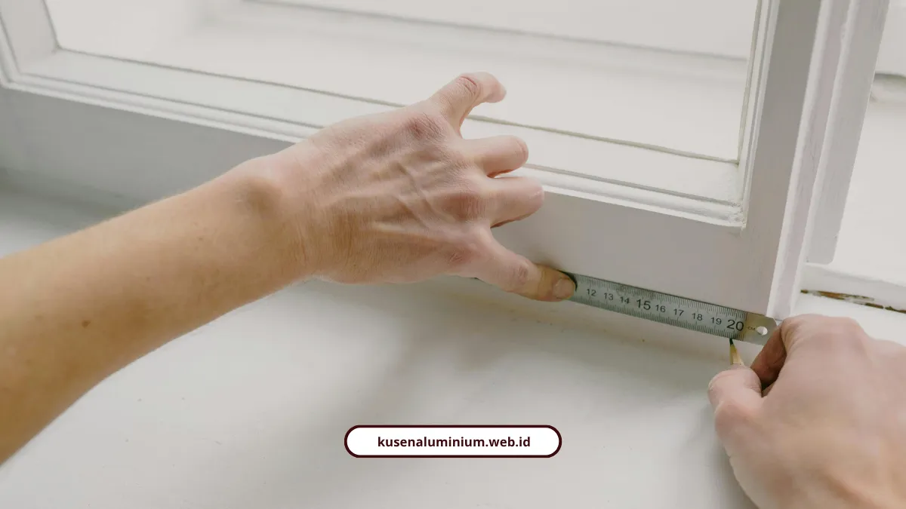

Cara Menghitung Kusen Aluminium Rumah Minimalis

📌 Ringkasan Inti
Panduan praktis menghitung kusen aluminium rumah minimalis menggunakan rumus keliling meter lari (m'), simulasi RAB kamar tidur, komparasi profil 3 vs 4 inci, hingga strategi antisipasi waste material:
- Rumus keliling kusen pintu: (2 x Tinggi) + Lebar, sedangkan kusen jendela: 2 x (Tinggi + Lebar).
- Simulasi kamar tidur (pintu 90x220 cm + jendela 80x170 cm) membutuhkan 10,3 meter lari dengan estimasi biaya Rp1.958.030.
- Profil 3 inci (76 mm) ideal untuk bukaan standar hemat biaya, sedangkan profil 4 inci (100 mm) untuk bukaan lebar dan pintu utama fasad.
- Kusen aluminium lebih hemat 20%–50% dibanding kayu Kamper atau Jati karena bebas biaya perawatan berkala dan 100% anti rayap.
- Wajib siapkan cadangan material (waste) 5%–10% serta dana kontingensi 5% untuk antisipasi sambungan miter dan kenaikan harga bahan.
- Apa Rumus Dasar Menghitung Kusen Aluminium?
- Contoh Perhitungan Kamar Tidur dengan 1 Pintu dan 1 Jendela
- Bagaimana Menghitung Jendela Kombinasi atau Fixed Window?
- Pilih Profil 3 Inci atau 4 Inci untuk Rumah Minimalis?
- Berapa Kisaran Harga per Meter Lari yang Perlu Disiapkan?
- Apakah Aluminium Benar-Benar Lebih Hemat dari Kayu?
- Ada Tips Penting Biar Perhitungan Tidak Meleset?
- Hitung Dulu Sebelum Tanda Tangan Kontrak
- FAQ Seputar Menghitung Kusen Aluminium
Menghitung kusen aluminium sebenarnya cuma soal menjumlah keliling bukaan pintu dan jendela dalam satuan meter lari. Dengan rumus sederhana ini, Anda bisa cross check RAB sebelum tukang mulai kerja.
Saya sengaja tulis ini karena banyak yang pasrah saja sama angka borongan tanpa tahu cara hitungnya. Padahal rumusnya tidak rumit, cuma butuh ketelitian di angka ukuran.
Apa Rumus Dasar Menghitung Kusen Aluminium?
Rumusnya beda antara pintu dan jendela, karena bagian bawah pintu tidak pakai kusen. Berikut rumus dasarnya:
- Kusen pintu: Volume (m') = (2 x Tinggi Pintu) + Lebar Pintu
- Kusen jendela: Volume (m') = 2 x (Tinggi Jendela + Lebar Jendela)
- Luas kaca: Panjang x Lebar (m2)
Selain itu, ada aksesori wajib yang tidak boleh dilupakan dalam hitungan, yaitu sealant, skrup fixer, karet EPDM, handle, dan friction stay.
Contoh Perhitungan Kamar Tidur dengan 1 Pintu dan 1 Jendela
Supaya lebih kebayang, saya kasih contoh kasus nyata pakai aluminium warna 4 inci. Ukuran pintu 90 cm x 220 cm:
Volume pintu = (2 x 2,2) + 0,9 = 5,3 m'
Ukuran jendela 80 cm x 170 cm:
Volume jendela = 2 x (1,7 + 0,8) = 5,0 m'
Total volume kusen = 5,3 m' + 5,0 m' = 10,3 m'. Dengan analisa biaya satuan all-in bahan dan tukang sebesar Rp190.100 per meter, maka:
Total biaya kusen = 10,3 m' x Rp190.100 = Rp1.958.030
Angka ini bisa jadi acuan cepat sebelum Anda dapat penawaran resmi dari tim teknis.

Bagaimana Menghitung Jendela Kombinasi atau Fixed Window?
Untuk jendela kombinasi, hitungnya perlu dipecah per bagian tiang dan ambang, tidak bisa langsung keliling seperti jendela biasa. Contohnya begini:
- Kusen 3 tiang vertikal: 3 x 1,30 m = 3,90 m'
- 4 ambang horisontal: 4 x 0,65 m = 2,60 m'
- Total kusen = 6,50 m'
- Luas kaca mati = 0,67 m x 1,24 m = 0,8174 m2
Total biayanya dihitung dari penjumlahan (meter kusen x harga kusen), (luas kaca x harga kaca), dan (jumlah daun x harga daun).
Estimasi Akurat & Survei Lokasi Gratis Malang Raya
Hindari salah hitung dan pemborosan material. Dapatkan perhitungan RAB kusen aluminium transparan dan survei bukaan dinding gratis di Kota Malang, Kabupaten Malang, dan Kota Batu.
Pilih Profil 3 Inci atau 4 Inci untuk Rumah Minimalis?
Tergantung lebar bukaan pintu atau jendela Anda. Satu batang kusen aluminium standar di pasaran panjangnya 6 meter, jadi pemilihan profil menentukan efisiensi potongan.
- Kusen 3 inci (76 mm): ideal untuk jendela residensial standar dengan lebar daun kurang dari 60 cm, kaca tebal 5-6 mm, pintu interior atau ringan, cocok untuk rumah tipe 36-120
- Kusen 4 inci (100 mm): dipakai untuk bukaan lebar di atas 60 cm per daun atau lebar total di atas 120 cm, kaca tempered tebal, serta pintu atau jendela utama fasad
Selisih lebar 24 mm pada profil 4 inci memberi kekakuan ekstra supaya kusen tidak bergoyang kena angin, tapi harganya juga lebih mahal sekitar 15%-25% dibanding profil 3 inci.
Berapa Kisaran Harga per Meter Lari yang Perlu Disiapkan?
Range umum borongan ada di Rp120.000 sampai Rp230.000 per meter lari, tapi tiap merek punya angkanya sendiri. Berikut rinciannya:
- Alexindo: Rp150.000 - Rp225.000 / m'
- Dacon: Rp130.000 - Rp230.000 / m'
- YKK AP: Rp250.000 - Rp350.000 / m'
- Inkalum: Rp250.000 - Rp450.000 / m' (khusus profil tebal 0,9-2,0 mm untuk beban berat)
Kalau Anda ingin tahu lebih detail soal harga per batang dan per meter dari masing-masing merek, kami sudah bahas lengkap di harga kusen aluminium per meter di Malang 2026.
Apakah Aluminium Benar-Benar Lebih Hemat dari Kayu?
Iya, terutama kalau dihitung sampai ke biaya perawatan jangka panjang. Aluminium 100% anti rayap, anti keropos, dan tidak lapuk, sedangkan kayu perlu dicat ulang tiap 3-5 tahun.
Dari sisi biaya instalasi saja, aluminium sudah lebih hemat 20%-30% dibanding kayu Kamper Samarinda Oven, dan hemat sampai 50% dibanding kayu Jati.
Kusen kayu Kamper ada di kisaran Rp150.000-Rp250.000 per meter (belum termasuk finishing dan ongkos pasang), sementara kusen aluminium standar 4 inci sudah all-in di kisaran Rp100.000-Rp180.000 per meter.
"Ketelitian menghitung volume meter lari dan penambahan waste material 5%–10% sangat penting agar pemotongan profil batangan 6 meter efisien dan tidak menyisakan potongan mati yang membebani anggaran Anda."
Ada Tips Penting Biar Perhitungan Tidak Meleset?
Ada dua hal yang sering dilupakan orang saat menghitung kebutuhan material sendiri:
- Tambahkan cadangan material (waste) 5%-10% dari total kebutuhan batang saat pemesanan profil
- Cadangkan dana darurat (contingency) sebesar 5% dari total RAB untuk antisipasi kenaikan harga bahan
Sena Saja, pengguna aplikasi kalkulator proyek digital, punya pengalaman soal pentingnya ketelitian input:
"Aplikasi kalkulator ini sangat membantu merancang, tapi catatan penting bagi pengguna saat menghitung digital adalah ketelitian awal, karena beberapa sistem belum memiliki fitur undo sehingga kesalahan input harus diulang."
Sementara Forta Development Team menegaskan standar struktur harga jual aluminium yang ideal, yaitu per unit untuk pintu atau jendela, per meter persegi untuk kaca, per meter lari untuk kusen, dan per meter lari untuk sealant atau karet.
Hitung Dulu Sebelum Tanda Tangan Kontrak
Menghitung kebutuhan kusen aluminium sendiri sebenarnya bukan hal susah, asal Anda pegang rumus keliling yang benar dan teliti di angka ukuran. Ini penting supaya Anda punya pembanding sebelum menyetujui penawaran dari tukang manapun.
Kalau mau lebih cepat tanpa hitung manual satu-satu, Anda bisa langsung coba estimator harga instan kami yang sudah otomatis menghitung meter lari dan estimasi biaya sekaligus. Contoh hasil pengerjaan berdasarkan perhitungan seperti ini juga bisa dilihat di galeri proyek kami.
FAQ Seputar Menghitung Kusen Aluminium
Tidak sama. Kusen pintu memakai rumus (2 x tinggi) + lebar karena bagian bawah tidak berkusen, sedangkan kusen jendela memakai rumus keliling penuh 2 x (tinggi + lebar).
Perlu. Kusen dihitung per meter lari, sedangkan kaca dihitung per meter persegi berdasarkan luas bidangnya, karena harga satuannya memang berbeda.
Cadangan 5%-10% dari total kebutuhan batang biasanya cukup aman untuk mengantisipasi sisa potongan yang terbuang saat proses pemasangan.